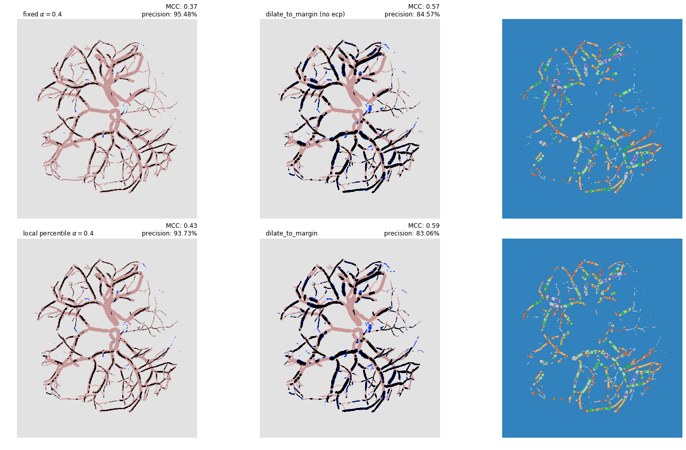
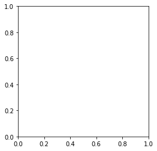

In [6]: run margin_add_demo.py
T-BN0164923.png ******************************
/home/luke/anaconda3/lib/python3.6/site-packages/skimage/util/arraycrop.py:175: FutureWarning: Using a non-tuple sequence for multidimensional indexing is deprecated; use `arr[tuple(seq)]` instead of `arr[seq]`. In the future this will be interpreted as an array index, `arr[np.array(seq)]`, which will result either in an error or a different result.
cropped = np.array(ar[slices], order=order, copy=True)
T-BN0651415.png ******************************
/home/luke/anaconda3/lib/python3.6/site-packages/numpy/core/fromnumeric.py:2920: RuntimeWarning: Mean of empty slice.
out=out, **kwargs)
/home/luke/anaconda3/lib/python3.6/site-packages/numpy/core/_methods.py:85: RuntimeWarning: invalid value encountered in double_scalars
ret = ret.dtype.type(ret / rcount)
T-BN1328016.png ******************************
T-BN1650687.png ******************************
T-BN2050224.png ******************************
T-BN2095839.png ******************************
T-BN2432252.png ******************************
T-BN4130351.png ******************************
T-BN4384182.png ******************************
T-BN4569506.png ******************************
T-BN5280796.png ******************************

T-BN5961598.png ******************************
T-BN6028328.png ******************************
T-BN6238549.png ******************************
T-BN6746662.png ******************************
T-BN7531176.png ******************************
T-BN7646343.png ******************************
T-BN7726580.png ******************************
T-BN7753462.png ******************************
T-BN7767693.png ******************************
T-BN8333878.png ******************************

T-BN8549337.png ******************************
T-BN8789191.png ******************************
T-BN8914395.png ******************************

T-BN9211170.png ******************************
In [7]: radii
Out[7]:
array([[0, 0, 0, ..., 0, 0, 0],
[0, 0, 0, ..., 0, 0, 0],
[0, 0, 0, ..., 0, 0, 0],
...,
[0, 0, 0, ..., 0, 0, 0],
[0, 0, 0, ..., 0, 0, 0],
[0, 0, 0, ..., 0, 0, 0]])
In [8]: radii==2
Out[8]:
array([[False, False, False, ..., False, False, False],
[False, False, False, ..., False, False, False],
[False, False, False, ..., False, False, False],
...,
[False, False, False, ..., False, False, False],
[False, False, False, ..., False, False, False],
[False, False, False, ..., False, False, False]])
In [9]: plt.imshow(_)
Out[9]: <matplotlib.image.AxesImage at 0x7f9352396550>
In [10]: radii==3
Out[10]:
array([[False, False, False, ..., False, False, False],
[False, False, False, ..., False, False, False],
[False, False, False, ..., False, False, False],
...,
[False, False, False, ..., False, False, False],
[False, False, False, ..., False, False, False],
[False, False, False, ..., False, False, False]])
In [11]: plt.imshow(_)
Out[11]: <matplotlib.image.AxesImage at 0x7f9358362dd8>
In [12]: plt.imshow(radii==4)
Out[12]: <matplotlib.image.AxesImage at 0x7f936005b9b0>
In [13]: plt.imshow(_)
---------------------------------------------------------------------------
TypeError Traceback (most recent call last)
<ipython-input-13-601ac45b4db0> in <module>
----> 1 plt.imshow(_)
~/anaconda3/lib/python3.6/site-packages/matplotlib/pyplot.py in imshow(X, cmap, norm, aspect, interpolation, alpha, vmin, vmax, origin, extent, shape, filternorm, filterrad, imlim, resample, url, data, **kwargs)
2699 filternorm=filternorm, filterrad=filterrad, imlim=imlim,
2700 resample=resample, url=url, **({"data": data} if data is not
-> 2701 None else {}), **kwargs)
2702 sci(__ret)
2703 return __ret
~/anaconda3/lib/python3.6/site-packages/matplotlib/__init__.py in inner(ax, data, *args, **kwargs)
1803 "the Matplotlib list!)" % (label_namer, func.__name__),
1804 RuntimeWarning, stacklevel=2)
-> 1805 return func(ax, *args, **kwargs)
1806
1807 inner.__doc__ = _add_data_doc(inner.__doc__,
~/anaconda3/lib/python3.6/site-packages/matplotlib/axes/_axes.py in imshow(self, X, cmap, norm, aspect, interpolation, alpha, vmin, vmax, origin, extent, shape, filternorm, filterrad, imlim, resample, url, **kwargs)
5481 resample=resample, **kwargs)
5482
-> 5483 im.set_data(X)
5484 im.set_alpha(alpha)
5485 if im.get_clip_path() is None:
~/anaconda3/lib/python3.6/site-packages/matplotlib/image.py in set_data(self, A)
640 if (self._A.dtype != np.uint8 and
641 not np.can_cast(self._A.dtype, float, "same_kind")):
--> 642 raise TypeError("Image data cannot be converted to float")
643
644 if not (self._A.ndim == 2
TypeError: Image data cannot be converted to float

In [14]: plt.imshow(radii==5)
Out[14]: <matplotlib.image.AxesImage at 0x7f93537f9128>
In [15]: plt.show()
In [16]: plt.imshow(radii==6)
Out[16]: <matplotlib.image.AxesImage at 0x7f93616d60f0>
In [17]: plt.imshow((radii==5) | (radii==6) )
Out[17]: <matplotlib.image.AxesImage at 0x7f93613d3908>
In [18]: